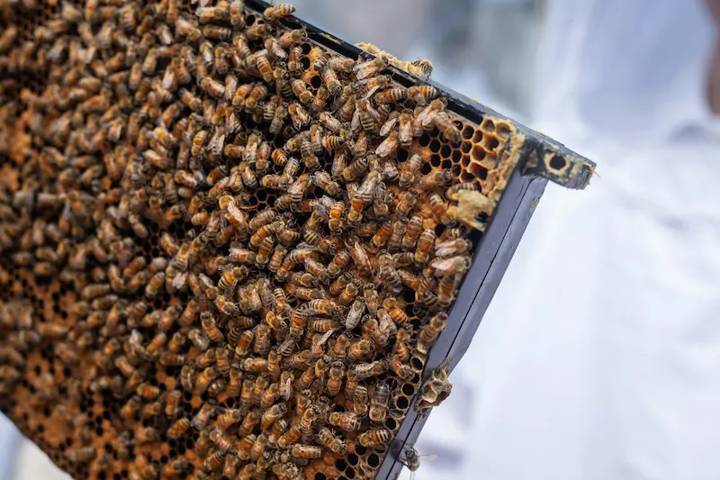

A Year in the Apiary - February Beekeeping Tasks (UK)
February is a turning point in the UK beekeeping year. The colony is still living on winter stores, but the queen often begins to lay more steadily, and bees need to keep an expanding patch of brood warm. Food can disappear quickly, and small problems like damp or mould can become more obvious. Your job is to steer the colony safely through late winter and prepare for spring.
This page is part of the BeezKnees Year in the Apiary – monthly beekeeping calendar. It focuses on bees in February, with late-winter hive checks, food monitoring, mould and condensation issues, and early spring preparation for UK beekeepers.
February at a Glance – Key Late-Winter Priorities
Bee Behaviour
- Cluster still present but more brood to keep warm
- Cleansing flights on mild, calm days
- Foraging limited to early pollen on warmer spells
Key Jobs for the Beekeeper
- Heft hives and top up fondant if needed
- Check for mould, damp and ventilation issues
- Finish winter varroa plans and spring prep
Risks to Watch
- Starvation as brood rearing increases
- Excess condensation and mould
- Disturbing the cluster with early inspections
What Your Bees Are Doing in February

Inside the hive, the cluster is still the heart of the colony, but the balance is shifting. As days slowly lengthen, the queen often increases egg laying. This means more brood to keep warm, more energy used and potentially higher food consumption than in early winter.
From the outside, you might see short flights on sunny days as bees perform cleansing flights and, where forage allows, collect early pollen from plants like snowdrops, crocus and hazel. A healthy colony usually sounds steady when you listen at the entrance – not silent, but not frantically noisy either.
February Weather and Hive Checks
UK weather in February can be a mix of cold snaps, wet spells and the first hints of milder conditions. Sudden changes are common – a few warm days followed by a sharp frost. These swings can affect how much your bees fly and how quickly they burn through stores.
- After storms or strong winds – confirm roofs, straps and hive stands are secure.
- After prolonged rain – make sure water is not pooling around stands or seeping into the hive.
- During milder spells – observe flight and look for bees returning with pollen (a good sign of brood rearing).
As in January, most February checks should still be made from the outside. Save full inspections for when temperatures are reliably suitable – the hive management guide explains inspection temperatures and techniques in more depth.
February Beekeeping Checklist – UK Monthly Tasks
- ✅ Heft each hive and compare with earlier in the winter.
- ✅ Add or top up fondant where colonies feel light.
- ✅ Check for obvious signs of mould, damp or condensation issues.
- ✅ Confirm entrances are clear and mouseguards still in place.
- ✅ Monitor for storm damage, loose roofs or wobbling stands.
- ✅ Finish key winter DIY – frames, boxes and equipment repairs.
- ✅ Review notes from last season and plan spring inspections.
- ✅ Keep varroa and disease history up to date in your records.
These tasks build directly on January’s work and lead into more hands-on jobs later in the year. You can find more detail on inspections, feeding and maintenance in the hive management and hygiene guides.
Feeding Bees in February – Monitoring Food Stores
As brood rearing picks up, colonies can use food surprisingly quickly. A hive that seemed comfortably heavy in early January may become light by late February, especially in a cold spring where bees cannot forage regularly.
- Heft each hive from the back or side and compare how it feels with your earlier visits.
- Strong colonies with a growing brood area may consume several kilograms of stores over late winter.
- If in doubt, adding fondant above the cluster is usually safer than risking starvation.
By this point in the season, many UK beekeepers treat fondant as an insurance policy – especially for colonies that went into winter a little light, late nucs or hives that felt borderline in January. Place fondant as close as possible to the cluster so bees can reach it on cold days.
For more context on feeding strategy through the year, see the hive management guide.
Varroa and Disease Considerations in February

Many UK beekeepers will already have carried out their main winter varroa treatment in December or January. By February, the focus is often on monitoring and planning rather than new treatments, although practices vary between beekeepers and regions.
- Check that you have recorded any winter treatments used.
- Make a note of colonies that looked weak, struggled or had high mite loads last year.
- Plan follow-up monitoring once brood inspections start in spring, using methods described in the varroa guides.
If you are considering any further treatment, always follow current UK guidance and product instructions, and never treat honey supers intended for consumption. For more detail, see the varroa management and bee diseases overview.
Checking for Mould and Moisture Problems
Late winter is when small moisture issues can show up as patches of mould on the crownboard, inside the roof or on unused outer combs. A little mould on surfaces that the bees are not actively using is fairly common, but heavy mould or a musty smell can point to a problem.
- Green or white mould on the crownboard or outer combs.
- Excess condensation dripping onto the cluster area.
- A strong, unpleasant, damp smell when briefly opening the hive.
If you do see mould, wait for a calm, reasonably mild day, then work quickly:
- Scrape away obvious mould on the crownboard or inside the roof.
- Consider adjusting insulation or ventilation so moisture can escape without chilling the bees.
- Review the hive’s position – is it sheltered but not shaded, tilted slightly so water drains away?
Good hive hygiene and layout, covered in more depth in the hygiene guide, help reduce the risk of mould becoming a recurring issue.
Spring Preparation – Getting Ready for the Busy Season
February is an excellent time to think ahead. Once temperatures rise, things move quickly: brood nests expand, forage increases and swarm risk arrives. The more you can prepare now, the smoother your spring will be.
- Finish building, wiring and spacing brood and super frames.
- Check spare brood boxes, supers, floors and roofs so they are ready for use.
- Decide which colonies may need early extra space or closer monitoring for swarm control.
- Review your approach to swarm management in the hive management guide so methods are clear before things get busy.
A little planning in February reduces the pressure when your first spring inspections show that colonies are expanding rapidly.
Record Keeping – Using Notes and HiveTag in February
Late winter is a perfect time to tidy up records and make sure your notes match what you see at the hive. Written records – or digital ones – make patterns easier to spot and decisions easier to justify.
- How heavy each hive felt in January and February.
- When you added fondant, and roughly how quickly colonies consumed it.
- Varroa treatments used over the past year, with dates and products noted.
- Any concerns about specific queens or colonies that may need extra attention in spring.
Some beekeepers prefer a notebook, but many like a more structured tool. Digital records make it easier to compare colonies, spot trends and see a whole season at a glance. The HiveTag web app is designed to help you log inspections, feeding, treatments and hive locations so that decisions in February and beyond are based on clear information.
Learning, Educational Events and Winter Reading
With hands-on work still limited, February is a good time to build your knowledge. Many associations run winter lecture programmes, study groups and beginner courses that cover everything from basic hive management to disease recognition and swarm control.
- Attend local association meetings, talks or online webinars on topics you want to strengthen.
- Read up on bee diseases and pests, varroa management and hive hygiene so you are confident before inspections restart.
- Explore core guides such as Getting Started and Hive Management for a refresher on seasonal tasks.
Time invested in learning now pays off later, when you are making quicker decisions with frames in your hands instead of a book.
Garden and Forage – Supporting Bees in February
Natural forage is still limited in February, but some plants can provide valuable pollen and nectar on milder days. These early sources help colonies feed brood and can support other pollinators too.
- Snowdrops, crocus and early daffodils in clusters near the apiary.
- Hazel and willow for early pollen where space allows.
- Winter-flowering shrubs like mahonia and winter-flowering honeysuckle to bridge the gap before spring.
For broader ideas on making your space pollinator-friendly, see the bee gardening guide and Help the Bees.
Emergency Scenarios – When Things Go Wrong in February
- Heft feels very light compared with other hives.
- Bees may appear listless or clustered high in the box under the crownboard.
- Act quickly – add fondant directly above the cluster.
If you find a dead-out colony, try to understand what happened. Look for obvious signs of starvation, varroa damage, disease or queen problems. Close the hive to prevent robbing until you decide how to deal with the combs and equipment.
The bee diseases and bee stings and safety pages both include advice on working safely and knowing when to seek further guidance.
February Beekeeping FAQ – UK Beekeepers
Do I need to open the hive fully in February?
Often you do not. Most checks in February can be carried out from the outside by listening, observing flight behaviour and hefting the hive. Only open the hive briefly if you have a clear reason and the weather is calm and mild.
How often should I check hive weight in late winter?
Many beekeepers get into the habit of a quick heft whenever they visit the apiary, and at least every couple of weeks in late winter. Regular, gentle checks help you spot a change in weight before it becomes an emergency.
Is a bit of mould inside the hive a serious problem?
A little mould on the crownboard or on unused outer combs is quite common in late winter, especially in damp locations. It becomes more of a concern if you see extensive mould, wet comb or a strong musty smell. In that case, review ventilation, insulation and hive position.
Should I still be feeding fondant in February?
Yes, if hives feel light or colonies were borderline earlier in winter, fondant is still appropriate. Place it above the cluster so bees can reach it easily. Once consistent forage becomes available in spring, you can reassess feeding.
Can I move my hives in February?
Avoid moving hives unless there is a strong reason, such as safety or access. If you must move them, do it on a cold day when bees are tightly clustered and minimise disturbance. Plan any bigger moves for periods when bees are flying regularly and can reorientate.
How does February fit into swarm control planning?
Swarm control itself comes later, but February is the time to read up on methods, prepare spare equipment and identify colonies that may become strong candidates for early swarm control. The hive management guide outlines common approaches.
What role do records and HiveTag play in February?
Good records mean you are not relying on memory alone. Notes on hive weight, feeding and treatment history help you identify hives that need extra care. Tools like the HiveTag web app make it easier to keep those records consistent and accessible.
Is February too early to think about expanding my colonies?
It is too early to add large amounts of space, but not too early to plan. Decide which colonies you might split, which will need supers early and what equipment you will need so that you are ready when spring arrives.
Use this February guide alongside the rest of the Year in the Apiary calendar to build a clear, weather-aware routine for your bees throughout the year.